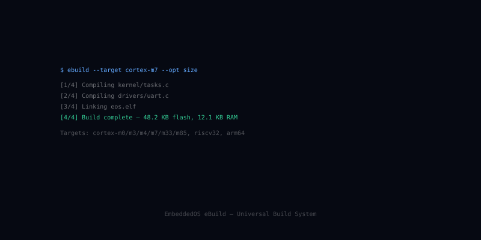

eBuild — Build System & SDK Generator
eBuild is the EoS build system and SDK generator — an 18-command CLI that drives configuration, cross-compilation, signing, packaging, and SDK generation for all 14 EoS components across every supported target.
What eBuild is
eBuild treats firmware as a composition: pick a board, pick a profile, pick a feature set, and eBuild resolves the dependency graph, fetches sources at pinned revisions, cross-compiles, signs, and produces a flashable artifact plus a matching SDK for downstream apps.
Builds are reproducible by default: same inputs, byte-identical outputs. CI integration is first-class — the same `ebuild` commands run locally and in pipelines.
Features
The shape of eBuild at a glance.
18-Command CLI
init, configure, build, sign, package, sdk, test, fuzz, deploy, bench, debug, …
14 SDK Targets
Auto-generates a build SDK for every component (EoS, EAI, ENI, EIPC, eBoot, eApps, …).
Profile Composition
Combine board + product profile + feature flags; resolves the full dependency graph.
Reproducible Builds
Pinned source revs, isolated toolchains, hash-stable outputs.
Cross-Compile Matrix
ARM, AArch64, RISC-V, x86_64 toolchains managed automatically.
Signing & Packaging
Built-in Ed25519 signing, .eos / .img / .hex / .uf2 packaging.
CI-First
GitHub Actions, GitLab CI, Jenkins recipes shipped; same commands locally and in CI.
Bench & Fuzz
Integrated micro-benchmark and fuzzer drivers for kernel / app modules.
Workspace Mode
Multi-repo monorepos with shared toolchain caches.
Open source on GitHub
eBuild is Apache-2.0 licensed and developed in the open. Issues, discussions, and pull requests welcome.
In the EoS stack
eBuild is the highlighted layer below.
Pairs well with
Sibling components that eBuild commonly works alongside.
Ready to build with eBuild?
Start with the docs, browse the source, or join the community.